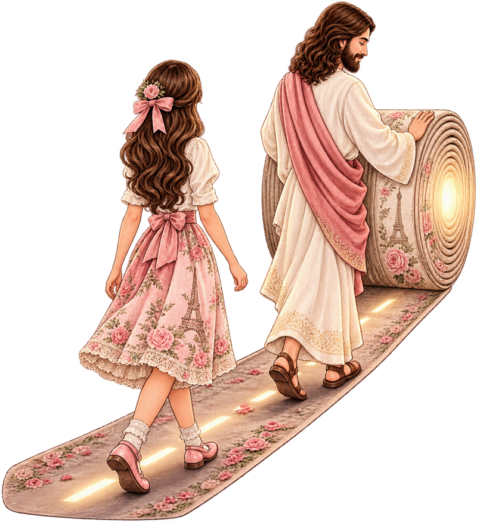

La Máquina del Tiempo
Buscando una fecha especial...
* Fecha Encontrada *
años de bendiciones...
Cada año deja huellas.
Y en cada uno, Dios estuvo presente.

23 · XI · 2005 — 21 años
Feliz Cumpleaños
Que en este nuevo año Dios siga escribiendo cosas hermosas en tu historia.
«Deléitate asimismo en Dios, y él te concederá las peticiones de tu corazón»Salmo 37:4
Con cariño, Jacob Telmo